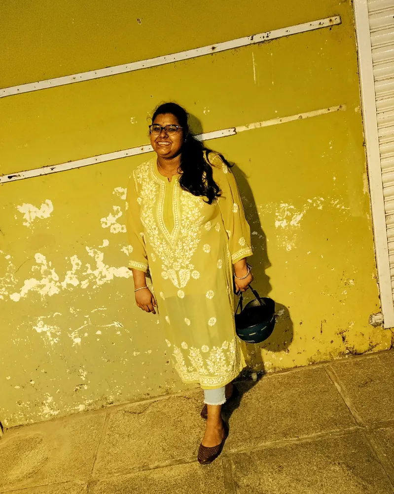

<meta charset="utf-8">
<title>Gopika Jaideep</title>
<meta name="viewport" content="width=device-width, initial-scale=1, viewport-fit=cover">
<meta name="description" content="Gopika Jaideep, AI/ML engineer in Melbourne: LLM agents, RAG systems and ML models for high-stakes domains, with the evals to prove it.">
<link rel="preconnect" href="https://fonts.googleapis.com">
<link rel="preconnect" href="https://fonts.gstatic.com" crossorigin>
<link rel="stylesheet" href="https://fonts.googleapis.com/css2?family=Bricolage+Grotesque:opsz,wght@12..96,500;12..96,700;12..96,800&family=IBM+Plex+Sans:wght@400;500;600&family=IBM+Plex+Mono:wght@400;500;600&family=Caveat:wght@600;700&display=swap">
<script>try { const t = localStorage.getItem('gj-theme'); if (t === 'light' || t === 'dark') document.documentElement.dataset.theme = t; } catch (e) {}</script>
<link rel="stylesheet" href="assets/site.css?v=46">
<style>
.hero { display: grid; grid-template-columns: minmax(0, 1.2fr) minmax(0, .8fr); gap: clamp(24px, 4vw, 56px); align-items: center; padding-block: clamp(32px, 6vw, 72px) clamp(20px, 3vw, 36px); }
@media (max-width: 880px) { .hero { grid-template-columns: minmax(0, 1fr); } }
.kicker { display: flex; flex-wrap: wrap; gap: 8px; }
.hero h1 { font-size: clamp(56px, 9.5vw, 124px); margin-top: 18px; }
.rot { font: 600 clamp(20px, 2.4vw, 28px)/1.3 var(--display); letter-spacing: -.01em; margin: 0 0 14px; }
.rot .w { display: inline-block; color: var(--accent); min-width: 6ch; }
.rot .w.swap { animation: wordin .5s var(--ease); }
@keyframes wordin { from { transform: translateY(.45em); opacity: 0; } }
.cta { display: flex; flex-wrap: wrap; gap: 10px; margin-top: 26px; }
/* greeting video, blended into the page: no frame, edges feathered away with an oval mask, looping */
.sample { margin: 0; }
.sample .frame { position: relative; aspect-ratio: 1 / 1; }
.sample video, .sample img { width: 100%; height: 100%; object-fit: cover; object-position: center 30%; display: block;
  -webkit-mask-image: radial-gradient(ellipse 50% 54% at 50% 44%, #000 30%, rgba(0,0,0,.7) 48%, rgba(0,0,0,.25) 66%, transparent 82%);
          mask-image: radial-gradient(ellipse 50% 54% at 50% 44%, #000 30%, rgba(0,0,0,.7) 48%, rgba(0,0,0,.25) 66%, transparent 82%); }
.sample .ctl { position: absolute; right: 12%; bottom: 8%; display: flex; gap: 6px; }
.sample .ctl button { font: 500 11px/1 var(--mono); color: var(--term-ink); background: rgba(8,12,10,.78); border: 1px solid rgba(207,224,214,.25); border-radius: 8px; padding: 8px 10px; cursor: pointer; }
.sample .ctl button:hover, .sample .ctl button[aria-pressed="true"] { border-color: var(--term-ink); }

/* how I build: animated pipeline */
.flow { padding: 22px; }
.flow svg text { font: 600 13px var(--body); fill: var(--ink); }
.flow svg .sub { font: 400 11px var(--mono); fill: var(--ink-2); }
.flow .node rect { fill: var(--sheet); stroke: var(--rule); stroke-width: 1.5; transition: stroke .2s, fill .2s; }
.flow a.node:hover rect, .flow a.node:focus rect { stroke: var(--ink); }
.flow .gate rect { stroke: var(--accent); fill: var(--accent-soft); }
.flow .wire { stroke: var(--rule); stroke-width: 2; fill: none; }
.flow .pulse { fill: var(--accent); }
.flow .blocked { fill: var(--signal); }
.flow-cap { display: flex; flex-wrap: wrap; justify-content: space-between; gap: 10px; align-items: center; margin-top: 10px; font-size: 13.5px; color: var(--ink-2); }

.meet { display: grid; grid-template-columns: 300px minmax(0, 1fr); border-radius: 22px; overflow: hidden; background: var(--sheet); border: 1px solid var(--rule); text-decoration: none; color: var(--ink); transition: transform .4s var(--ease), border-color .2s; }
.meet:hover { transform: translateY(-4px); border-color: var(--ink); }
@media (max-width: 720px) { .meet { grid-template-columns: minmax(0, 1fr); } }
.meet-ph { background: var(--sheet-2); overflow: hidden; display: block; min-height: 300px; }
@media (max-width: 720px) { .meet-ph { aspect-ratio: 4 / 5; max-height: 440px; min-height: 0; } }
.meet-ph img { width: 100%; height: 100%; object-fit: cover; object-position: center 18%; display: block; transition: transform .8s var(--ease); }
.meet:hover .meet-ph img { transform: scale(1.05); }
.meet-tx { display: grid; gap: 14px; align-content: center; padding: clamp(22px, 4vw, 44px); }
.meet-tx b { font: 800 clamp(34px, 4.5vw, 56px)/1 var(--display); letter-spacing: -.03em; }
.meet-p { font-size: clamp(15.5px, 1.4vw, 18px); color: var(--ink-2); max-width: 54ch; }
.meet-tx .btn { justify-self: start; }
.explore { display: grid; grid-template-columns: repeat(4, minmax(0, 1fr)); gap: 12px; }
@media (max-width: 1000px) { .explore { grid-template-columns: repeat(2, minmax(0, 1fr)); } }
.explore .go-card:last-child { grid-column: span 2; }
@media (max-width: 520px) { .explore .go-card:last-child { grid-column: auto; } }
@media (max-width: 520px) { .explore { grid-template-columns: minmax(0, 1fr); } }
.go-card { display: grid; gap: 10px; padding: 20px; border-radius: 16px; background: var(--sheet); border: 1px solid var(--rule); text-decoration: none; color: var(--ink); transition: transform .35s var(--ease), border-color .2s, background .2s; min-width: 0; }
.go-card:hover { transform: translateY(-5px); border-color: var(--ink); }
.go-card .ic { width: 42px; height: 42px; border-radius: 12px; background: var(--sage-soft); color: var(--ok); display: grid; place-items: center; transition: transform .4s var(--ease); }
.go-card:hover .ic { transform: rotate(-10deg) scale(1.08); }
.go-card .ic svg { width: 22px; height: 22px; }
.go-card p { margin: 0; font-size: 13.5px; color: var(--ink-2); }
.go-card .more { font: 500 12px/1 var(--mono); color: var(--accent); }
@media (max-width: 760px) { .flow { overflow-x: auto; -webkit-overflow-scrolling: touch; overscroll-behavior-x: contain; } .flow svg { min-width: 700px; } }   /* readable on phones: swipe the diagram sideways */
</style>

<header id="site-bar"></header>

<main class="wrap">
  <section class="hero">
    <div>
      <div class="kicker reveal"><span class="tag ok"><span class="dot"></span>Open to full-time AI/ML roles · Melbourne</span></div>
      <h1 class="reveal d1">Gopika Jaideep</h1>
      <p class="rot reveal d2">I build <span class="w" id="rotWord">LLM agents</span><br>for domains where a wrong answer hurts.</p>
      <p class="lede reveal d3">AI/ML engineer · Master of AI, Monash. Cancer caregiving, missing persons, vaping cessation and memorial services, <b>shipped with the evals to prove it.</b></p>
      <div class="cta reveal d4">
        <a class="btn solid magnetic" href="projects.html">See projects <span class="arr">→</span></a>
        <a class="btn magnetic" href="agent.html">Ask my RAG agent</a>
        <a class="btn" href="assets/GopikaJaideep_CV.pdf" download="GopikaJaideep_CV.pdf">Download CV ↓</a>
        <button class="btn" type="button" data-copy="email">Copy email</button>
      </div>
    </div>
    <div class="hero-media" style="position:relative">
    <figure class="sample reveal d2">
      <div class="frame">
        <video id="hello" src="character.mp4" poster="poster.jpg" muted loop autoplay playsinline preload="auto" aria-label="Gopika looks up from the monitors, smiles and waves"
          onerror="this.replaceWith(Object.assign(document.createElement('img'),{src:'poster.jpg',alt:'Gopika Jaideep under a spotlight'}));"></video>
        <div class="ctl"><button type="button" id="sound" aria-pressed="false">Sound off</button></div>
      </div>
    </figure>
    </div>
  </section>

  <section class="block" aria-label="Headline results">
    <div class="stats">
      <a class="stat reveal" href="projects.html#carewise"><div class="v" data-count="6">6</div><div class="k">cooperating agents in CareWise, no framework</div><div class="src">CareWise →</div></a>
      <a class="stat reveal d1" href="evals.html#quitory"><div class="v"><span data-count="0">0</span><small>%</small></div><div class="k">unsafe outputs on 500+ tested red-team queries</div><div class="src">Quitory →</div></a>
      <a class="stat reveal d2" href="evals.html#quitory"><div class="v"><span data-count="38" data-pre="+">+38</span><small>pp</small></div><div class="k">relevance over a GPT-4 baseline, held-out data</div><div class="src">Quitory →</div></a>
      <a class="stat reveal d3" href="evals.html#traceai"><div class="v"><span data-count="4">4</span><small>/4</small></div><div class="k">broken safety controls caught by mutation tests</div><div class="src">TraceAI →</div></a>
      <a class="stat reveal d4" href="evals.html#parkingspy"><div class="v"><span data-count="94.2">94.2</span><small>%</small></div><div class="k">Random Forest accuracy on 6 live data sources</div><div class="src">ParkingSpy →</div></a>
      <a class="stat reveal d4" href="experience.html"><div class="v" data-count="7">7</div><div class="k">people on the data team I lead at AusWise</div><div class="src">Experience →</div></a>
    </div>
  </section>

  <section class="block">
    <div class="sec-title"><div><div class="eyebrow">How I build</div><h2 style="margin-top:10px">Nothing ships past the eval gate</h2></div>
      <button class="btn" type="button" id="regress" aria-pressed="false">Simulate a regression</button></div>
    <div class="card flow reveal">
      <svg viewBox="0 0 980 150" role="img" aria-labelledby="flowT">
        <title id="flowT">Pipeline: data, then model or agent, then the eval gate, then ship. A regression stops at the gate.</title>
        <path class="wire" id="w" d="M150 75 H830"/>
        <a class="node" href="skills.html"><rect x="10" y="35" width="140" height="80" rx="14"/><text x="80" y="70" text-anchor="middle">Data</text><text class="sub" x="80" y="90" text-anchor="middle">pipelines · retrieval</text></a>
        <a class="node" href="projects.html"><rect x="250" y="35" width="160" height="80" rx="14"/><text x="330" y="70" text-anchor="middle">Agent / model</text><text class="sub" x="330" y="90" text-anchor="middle">LLM agents · RAG · ML</text></a>
        <a class="node gate" href="evals.html"><rect x="510" y="35" width="160" height="80" rx="14"/><text x="590" y="70" text-anchor="middle" id="gateT">Eval gate ✓</text><text class="sub" x="590" y="90" text-anchor="middle">tests · red-team · CI</text></a>
        <a class="node" href="experience.html"><rect x="770" y="35" width="200" height="80" rx="14"/><text x="870" y="70" text-anchor="middle">Ship</text><text class="sub" x="870" y="90" text-anchor="middle">production · real users</text></a>
        <g id="dots"></g>
      </svg>
      <div class="flow-cap"><span id="flowMsg">Illustrative simulation with random inputs: every change goes through the eval gate. Click any stage to see the work behind it.</span><span class="mono" id="flowCount">watch changes flow through the gate →</span></div>
    </div>
  </section>

  <section class="block">
    <a class="meet reveal" href="about.html">
      <span class="meet-ph"></span>
      <span class="meet-tx">
        <span class="eyebrow">Meet the engineer</span>
        <b>Hi, I'm Gopika.</b>
        <span class="meet-p">AI/ML engineer in Carlton, Melbourne. Master of AI from Monash. I lead a 7-person data team at AusWise and I build AI for people on their hardest days: carers, families and caseworkers.</span>
        <span class="btn solid">About me <span class="arr">→</span></span>
      </span>
    </a>
  </section>

  <section class="block" aria-labelledby="offclock">
    <div class="sec-title"><div><div class="eyebrow">Off the clock</div><h2 id="offclock" style="margin-top:10px">The human behind the evals</h2></div></div>
    <div class="photo-strip grid2">
      <figure class="polaroid reveal" style="--r:-4deg" tabindex="0" role="button" aria-label="Open photo: weekend by the water"><span class="tape"></span><figcaption>weekend by the water</figcaption></figure>
      <figure class="polaroid reveal d1" tabindex="0" role="button" aria-label="Open photo: sunset walks"><span class="tape"></span><figcaption>sunset walks</figcaption></figure>
      <figure class="polaroid reveal d2" tabindex="0" role="button" aria-label="Open photo: yellow kurta day"><span class="tape"></span><figcaption>yellow kurta day</figcaption></figure>
      <figure class="polaroid reveal d3" tabindex="0" role="button" aria-label="Open photo: selfie break"><span class="tape"></span><figcaption>selfie break 👋</figcaption></figure>
    </div>
  </section>

  <section class="block">
    <div class="sec-title"><div><div class="eyebrow">Explore</div><h2 style="margin-top:10px">Pick a page</h2></div></div>
    <div class="explore">
      <a class="go-card reveal" href="experience.html"><span class="ic"><svg viewBox="0 0 24 24" fill="none" stroke="currentColor" stroke-width="2" stroke-linecap="round"><path d="M3 7h18M3 12h12M3 17h7"/></svg></span><h3>Experience</h3><p>An interactive timeline from Kochi to Melbourne.</p><span class="more">Open →</span></a>
      <a class="go-card reveal d1" href="education.html"><span class="ic"><svg viewBox="0 0 24 24" fill="none" stroke="currentColor" stroke-width="2" stroke-linecap="round" stroke-linejoin="round"><path d="M2 9l10-5 10 5-10 5z"/><path d="M6 11v5c3 2 9 2 12 0v-5"/></svg></span><h3>Education</h3><p>Monash Master of AI, step by step.</p><span class="more">Open →</span></a>
      <a class="go-card reveal d2" href="projects.html"><span class="ic"><svg viewBox="0 0 24 24" fill="none" stroke="currentColor" stroke-width="2" stroke-linejoin="round"><rect x="3" y="3" width="7" height="7" rx="1.5"/><rect x="14" y="3" width="7" height="7" rx="1.5"/><rect x="3" y="14" width="7" height="7" rx="1.5"/><rect x="14" y="14" width="7" height="7" rx="1.5"/></svg></span><h3>Projects</h3><p>Agents, RAG and ML models, with live architecture.</p><span class="more">Open →</span></a>
      <a class="go-card reveal d3" href="skills.html"><span class="ic"><svg viewBox="0 0 24 24" fill="none" stroke="currentColor" stroke-width="2" stroke-linecap="round"><circle cx="6" cy="6" r="2.5"/><circle cx="18" cy="6" r="2.5"/><circle cx="12" cy="18" r="2.5"/><path d="M8 7.5l3 8M16 7.5l-3 8M8.5 6h7"/></svg></span><h3>Skills</h3><p>A graph linking every skill to its projects.</p><span class="more">Open →</span></a>
      <a class="go-card reveal d4" href="evals.html"><span class="ic"><svg viewBox="0 0 24 24" fill="none" stroke="currentColor" stroke-width="2" stroke-linecap="round"><path d="M4 20V10M10 20V4M16 20v-7M22 20H2"/></svg></span><h3>Evals</h3><p>Charts of every result. Replay every result.</p><span class="more">Open →</span></a>
      <a class="go-card reveal" href="agent.html"><span class="ic"><svg viewBox="0 0 24 24" fill="none" stroke="currentColor" stroke-width="2" stroke-linecap="round"><circle cx="11" cy="11" r="6.5"/><path d="M16 16l5 5"/></svg></span><h3>RAG Agent</h3><p>Ask about my work and watch the pipeline run.</p><span class="more">Open →</span></a>
      <a class="go-card reveal d4" href="about.html"><span class="ic"><svg viewBox="0 0 24 24" fill="none" stroke="currentColor" stroke-width="2" stroke-linecap="round"><circle cx="12" cy="8" r="4"/><path d="M4 21c1.5-4 4.5-6 8-6s6.5 2 8 6"/></svg></span><h3>About</h3><p>Intended use, limitations and how to reach me.</p><span class="more">Open →</span></a>
    </div>
  </section>

  <a class="next" href="experience.html"><div><small>NEXT · 1 / 7</small><b>Experience</b></div><span class="go">→</span></a>
</main>
<footer id="site-foot"></footer>

<script src="assets/site.js?v=46"></script>
<script src="assets/rag-core.js?v=46"></script>
<script src="assets/buddy.js?v=46"></script>
<script>
(() => {
  const { reduce } = window.GJ || { reduce: true };
  // rotating word
  const words = ['LLM agents', 'RAG systems', 'ML models', 'eval pipelines', 'safety guardrails'];
  const w = document.getElementById('rotWord'); let i = 0;
  if (!reduce) setInterval(() => { i = (i + 1) % words.length; w.textContent = words[i]; w.classList.remove('swap'); void w.offsetWidth; w.classList.add('swap'); }, 2200);

  // pipeline: changes flow left to right at random intervals. With "regression" on, each change has a random
  // chance of carrying a bug, and a randomly chosen eval catches it at the gate.
  const NS = 'http://www.w3.org/2000/svg', dots = document.getElementById('dots');
  const btn = document.getElementById('regress'), gateT = document.getElementById('gateT'), msg = document.getElementById('flowMsg'), cnt = document.getElementById('flowCount');
  const CHECKS = ['crisis-detection eval', 'retrieval eval', 'red-team suite', 'citation check', 'mutation tests', 'unit tests', 'latency budget'];
  const pick = a => a[Math.floor(Math.random() * a.length)];
  let regress = false, rate = 0, shipped = 0, blocked = 0;
  const IDLE = 'Illustrative simulation with random inputs: every change goes through the eval gate. Click any stage to see the work behind it.';
  btn.addEventListener('click', () => {
    regress = !regress; btn.setAttribute('aria-pressed', String(regress));
    rate = regress ? 0.25 + Math.random() * 0.35 : 0;          // a fresh, random regression rate each time
    btn.textContent = regress ? 'Fix the regression' : 'Simulate a regression';
    msg.textContent = regress ? `Regressions are slipping into about ${Math.round(rate * 100)}% of changes. Watch the gate.` : IDLE;
  });
  function launch() {
    const bad = regress && Math.random() < rate, check = pick(CHECKS);
    const c = document.createElementNS(NS, 'circle'); c.setAttribute('r', 7); c.setAttribute('cy', 75); c.setAttribute('class', bad ? 'blocked' : 'pulse');
    dots.appendChild(c);
    const stop = bad ? 510 : 830, t0 = performance.now(), dur = bad ? 1700 : 2600;
    const step = t => {
      const p = Math.min(1, (t - t0) / dur), x = 150 + (stop - 150) * p;
      c.setAttribute('cx', x);
      if (p < 1) return requestAnimationFrame(step);
      if (bad) {
        blocked++; gateT.textContent = 'Eval gate ✕'; setTimeout(() => gateT.textContent = 'Eval gate ✓', 700);
        msg.textContent = `Blocked: the ${check} failed, so this change never reached users.`;
        c.animate?.([{ opacity: 1 }, { opacity: 0 }], { duration: 500 }).finished.then(() => c.remove());
      }
      else { shipped++; c.remove(); }
      cnt.textContent = `${shipped} shipped · ${blocked} blocked`;
    };
    requestAnimationFrame(step);
  }
  const loop = () => { launch(); setTimeout(loop, 550 + Math.random() * 900); };   // random gaps between changes
  if (!reduce) loop(); else { cnt.textContent = 'animation paused (reduced motion)'; }
})();
</script>
